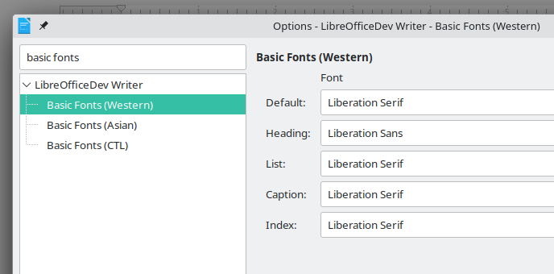
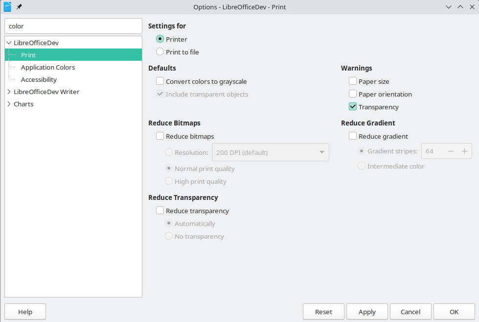
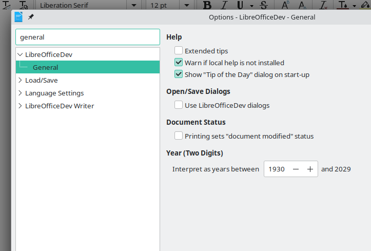

Week #7 - #11 - GSoC 2023 Weekly Report - Search Field in Options
Thanks to my ‘Search Field in Options’ project mentors Andreas Heinisch and Heiko Tietze for their time and guidance.
Project Report for Week #7 - #11
-
A lot of new patchsets submitted (between patchset 10 and 19): https://gerrit.libreoffice.org/c/core/+/152519
-
We decided to implement Plan B(initialize all strings at Options dialog start-up) instead of “extracting strings at build-time” approach.
-
all (visible) strings of 69 dialogs included in searching. Currently:
- labels,
- check buttons,
- radio buttons and
- buttons are included.
TODO: add accessible-names, accessible-descriptions and tooltip-texts into searching.
GetAllStrings()function returns all visible strings. e.g.:
OUString ScTpFormulaOptions::GetAllStrings()
{
OUString sAllStrings;
OUString labels[] = { "label1", "formulasyntaxlabel",
"label3", "label6",
"label7", "label8",
"label2", "label4",
"label9", "label10" };
for (auto& label : labels)
{
if (m_xBuilder->weld_label(label)->is_visible())
sAllStrings += m_xBuilder->weld_label(label)->get_label() + OUString(' ');
}
OUString radioButton[] = { "calcdefault", "calccustom" };
for (auto& radio : radioButton)
{
if (m_xBuilder->weld_radio_button(radio)->is_visible())
sAllStrings += m_xBuilder->weld_radio_button(radio)->get_label() + OUString(' ');
}
OUString button[] = { "reset", "details" };
for (auto& btn : button)
{
if (m_xBuilder->weld_button(btn)->is_visible())
sAllStrings += m_xBuilder->weld_button(btn)->get_label() + OUString(' ');
}
// check button
if (mxCbEnglishFuncName->is_visible())
sAllStrings += mxCbEnglishFuncName->get_label() + OUString(' ');
return sAllStrings.replaceAll("_", "");
}- Some screenshots from the development



Summary
- New patchsets submitted (between patchset 10 and 19): https://gerrit.libreoffice.org/c/core/+/152519
- Implementation of Plan B is completed. (initialize all strings at Options dialog start-up)
- all (visible) strings of 69 dialogs included in searching.:
- labels,
- check buttons,
- radio buttons and
- buttons are included.
***
Patch: https://gerrit.libreoffice.org/c/core/+/152519
Project Mentors: Andreas Heinisch and Heiko Tietze (Thanks for their time and guidance)
GSoC project page: https://summerofcode.withgoogle.com/programs/2023/projects/IKtSHIH1
Enhancement request on Bugzilla: https://bugs.documentfoundation.org/show_bug.cgi?id=49895